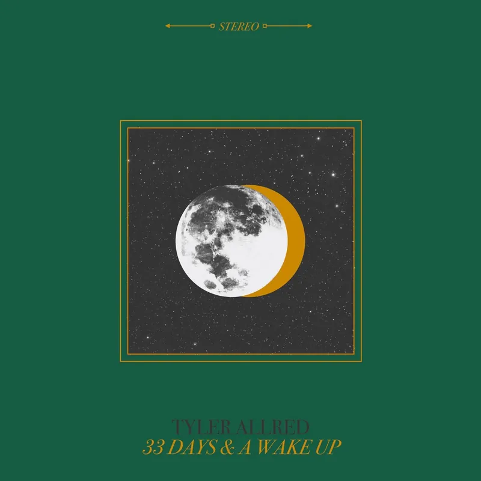

the EP · 2024 · four songs
33 Days & a Wake Up
- 01Kind of Nervous (Seen This Trick Before)3:51 (plays in the Spotify player)
- 02Expectations2:37 (plays in the Spotify player)
- 03It Might Be Fun3:34 (plays in the Spotify player)
- 04Anxious Anyway2:50 (plays in the Spotify player)
Recorded at Sunset Sound in Los Angeles. Cover art by Spencer Robens.